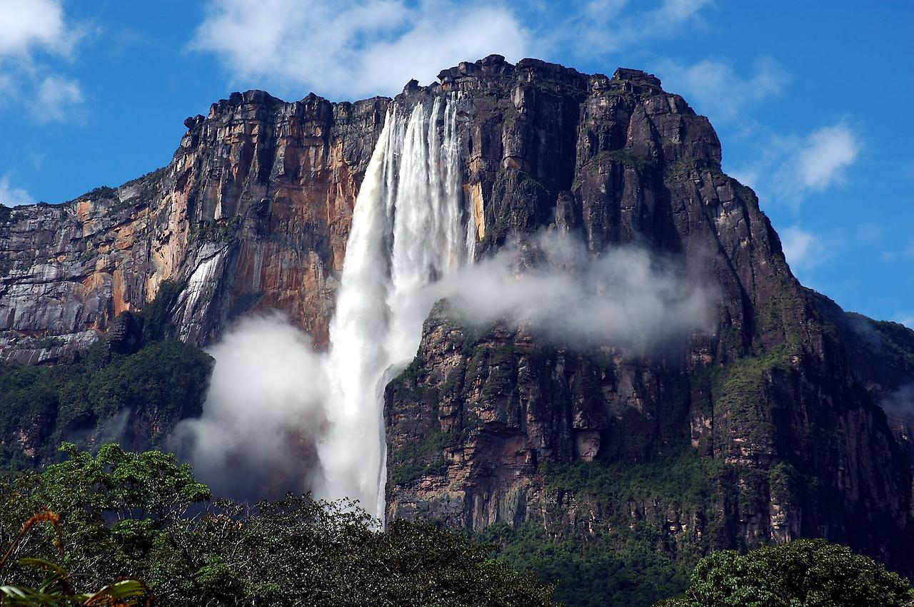
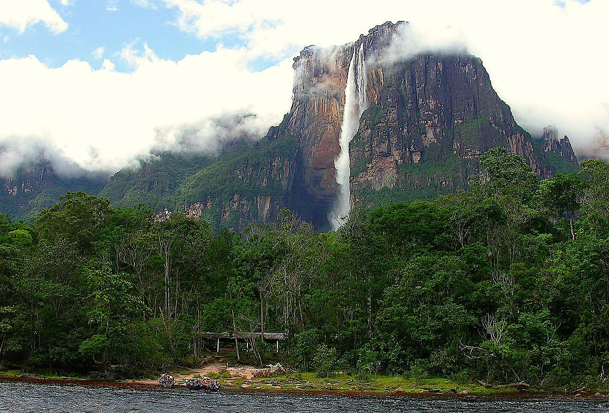
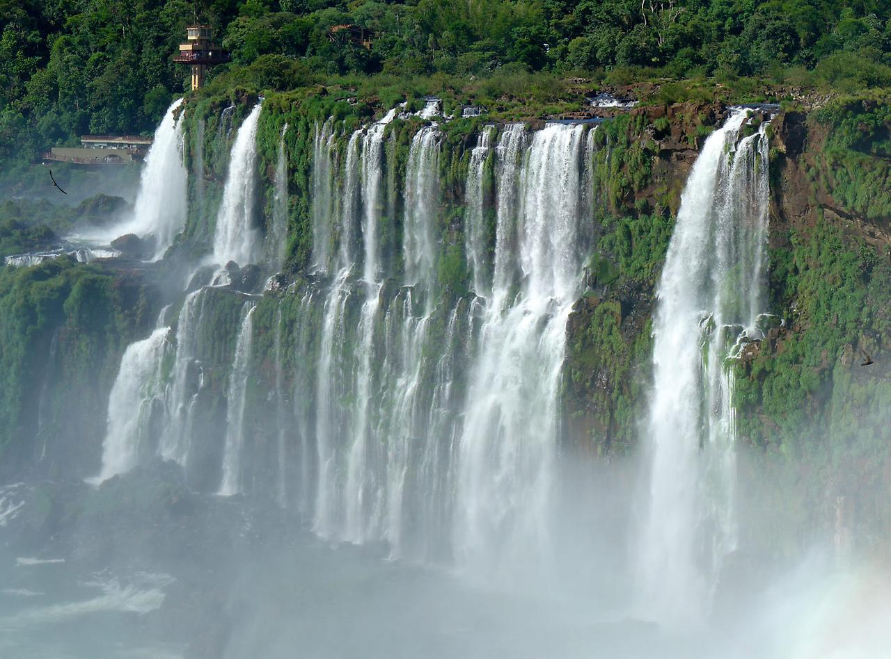
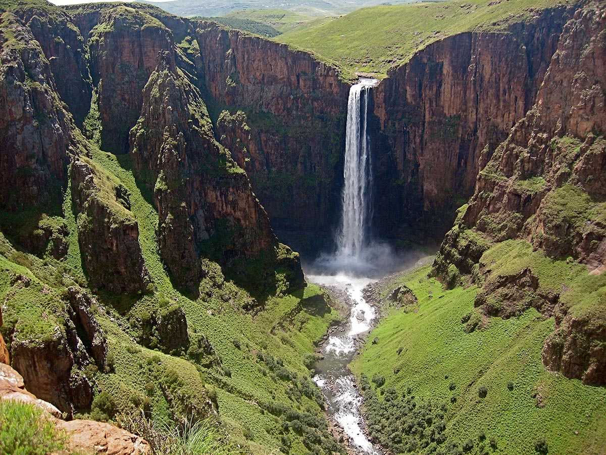

Найвищим водоспадом у світі є водоспад Анхель у Венесуелі. Це також найвищий безперервний водоспад у світі. Розташоване в Боліварі диво природи викликає у відвідувачів масу захвату. Приголомшлива краса цього місця абсолютно незрозуміла – її можна лише відчути, але не описати словами. Також неможливо оцінити всю цю пишність по фотографіях – все потрібно побачити своїми очима.
Висота водоспаду Анхель складає 979 м.

Цей складний сезонний водоспад є другим за висотою у світі. Він розташований в Південній Африці, а саме в Королівському Національному парку Натала в області Квазулу-Натала. Водоспад Тугела славиться своєю мальовничою красою. Відвідавши його одного разу, ви вже ніколи не захочете покидати це місце. Під час подорожі в національний парк не забувайте також забронювати Сафарі по всій його території. Це неймовірний досвід, який запам’ятається назавжди.
Висота водоспаду Тугела в сезон дощів становить 947 м.

Водоспад під назвою Катаратас лас-Трес Ерманас розташований в Перу. У вільному перекладі з іспанської мови назва перекладається, як Три Сестри. Це найвищий водоспад у Перу і один з найвищих у світі. Він розташований в Національному парку Отіші. Три сестри – це триярусний водоспад з трьома секціями, звідки і походить його ім’я. Він розташований у віддаленому регіоні Аякучо, куди не так легко дістатися відвідувачам.
Висота водоспаду складає 914 м.

У Норвегії і Гаваїв є одні з найвищих водоспадів у світі. Четвертий за висотою у світі і перший на Гаваях, водоспад Олупена є унікальним за своєю суттю. Це місце люблять відвідувати численні мандрівники, фотографи і навіть туристи. Він розташований на гавайському острові Молокаї. Хоча Алуп не приваблює стільки ж туристів, скільки Ніагара або Вікторія, він не менш вражаючий і гігантський.
Висота Олупена становить 900 метрів>
Розташований біля міста Кіспіс водоспад Катарата Умбілла є п’ятим за висотою у світі. На туристів він має гіпнотичний вплив, а місцеві жителі навіть говорять про прокляття водоспаду. Крім того, є безліч дрібніших водоспадів навколо цього місця, які роблять його ідеально відповідним для експедиції в Перу. Якщо у вас достатня фізична підготовка, то сміливо збираєтеся в дорогу і підкорюйте природну красу цієї країни.
Висота Катарата Умбілла становить 895 метрів.